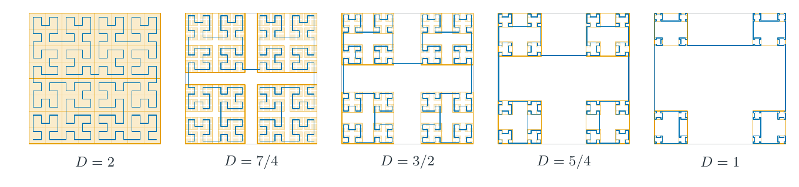

Networked Research source records
A project can be opened as a graph of claims, figures, calculations and edits. The author works in an editor while an agent uses permitted tools on those same versioned objects. Here you can follow one claim across a project boundary and another back to the edit that changed it.
The index identifies each file by its SHA-256 digest. It also records the order of the selected edits, the source passages they affected, and the published pages where their results can be read.
An author changes the argument
Compare the Hilbert section before and after the rewrite. Follow the derivation of the cost correction into the dashed cuts and cost exponents in Figure 4. The later inset follows one selected cell as it becomes the next register. The two heading files isolate a subsequent edit to the labels.


A citation opens another project
Begin in the Kalmár project at the question about sixteen symbols. One branch counts layouts. Another identifies a particular version of the Cost project and the evidence for two addresses of symbol 11. Check the target file against the digest in the citation, then use its register sizes to reconstruct both addresses. The route in the first project splits its weight between a local result and a citation. In local scope the result is the layout count. Opening the referenced project adds the cited addresses. Both records in this worked example are public.
A calculation you can repeat
A separate simulation splits every square at each round. Recalculate the accumulated costs when a split is priced first by area and then by wall length. Compare the per-round values with the table and trace the result through the run record. This calculation was made for the walkthrough.
What the editor retained
The project summary counts turns, proposal versions, decisions and tool attempts. A new proposal version can be saved several times before the author decides what to apply. The aggregate counts give the scale of the work. The source comparison above identifies a particular change that reached the manuscript.
A question for the next project
The author asked to make the nesting visible. In the finished inset, equally wide drawings show successively smaller physical regions. A candidate instruction for another editor is to check the scale before inferring physical size. Two marks can each span 40 pixels and represent different widths.
Try that instruction on unfamiliar images with known calibrations. Compare the decisions with and without the instruction under the same conditions. The historical record supplies the original correction. Transfer to a new project is an experiment still to run.